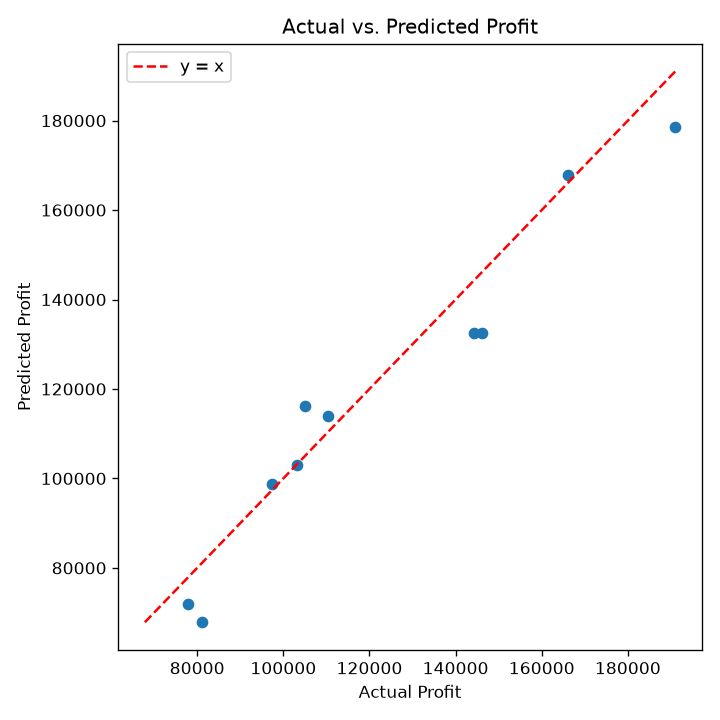
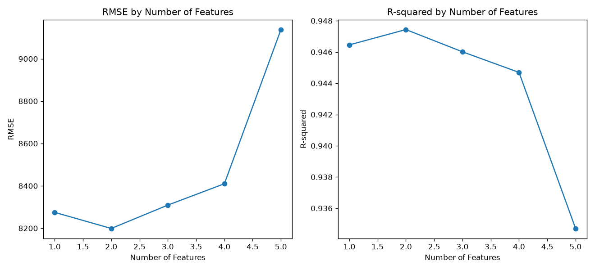

Reusable CRISP-DM ML Pipeline
Topic 1 Focus
Sweet Spot: k=2
50 Startups: Venture Capital Profit Optimization
Automated multiple linear regression benchmark across 5 feature selection strategies (Lasso L1, Forward SFS, Recursive Feature Elimination, ElasticNet, Exhaustive Combinatorial). Demonstrating bias-variance trade-offs, multicollinearity mitigation, and out-of-sample generalization.
Assignment Architecture: Both 50 Startups and Boston Housing execute the exact same parameterized scikit-learn feature-selection skill and CRISP-DM protocol. Use the top toggle to switch datasets instantly.
Dataset Profile
50 × 5
80% Train / 20% Test
Optimal Model
k = 2
Min RMSE: $8,198.80
Overfitting Cliff
k = 5
Error Spike: +$939.19
Active Features (2):
Optimal Parsimony
Predicted Net Profit
$130,094.66
Lower is better. Out-of-sample generalization error on 20% test holdout.
Higher is better. Measures variance in target explained by the model.
Dotted red line represents ideal y = x perfect calibration.
Amber bars flag test instances with absolute error exceeding threshold.
| Predictor | Estimate (β) | Std. Error | t-Statistic | p-Value | 95% Confidence Interval | VIF Collinearity |
|---|
| Rank | Sample ID | Actual Value | Predicted Value | Residual (e) | Abs Error | % Error | Status |
|---|

